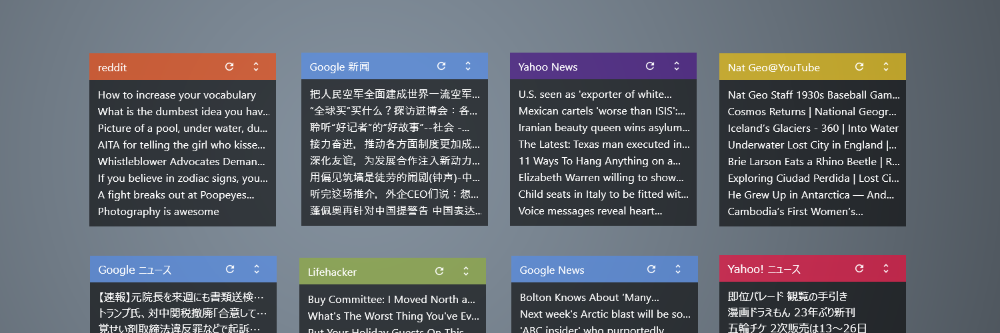

FeedMoe
Features
- Simple skin for RSS Feeds. RSS2.0 and some Atom formats.
- Keyword filtering, URL filtering.
- Low cpu usage.
- Plugin FeedReader.dll version 2.3.0
Version History
2019-11-22
- changed regular expressions for filtering.
2019-11-16
- Lifehacker: URL filtering is enabled by default.
- little bit secure than before.
>> Howto